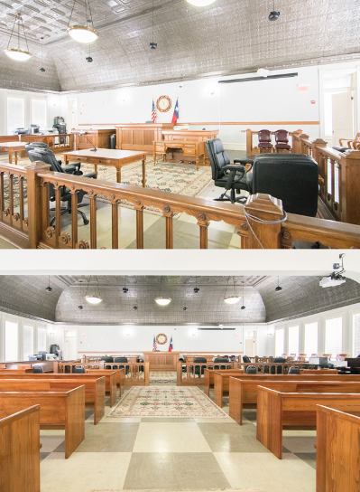

Module 10 Criminal
The Criminal Justice System in Texas
The Criminal Justice System in Texas
Chapter Learning Objective
By the end of this chapter, you will be able to:
- Explain the purpose, structure, and behavior of the criminal justice system in Texas
Introduction
Criminal justice is the delivery of justice to those who have committed crimes. In Texas, the criminal justice system is a series of government agencies and institutions whose goals are to identify and catch unlawful individuals to inflict a form of punishment on them.
Insider Perspective: Theory Meets Practice

Figure 12.1 The jury sits along one side, between the judge/ witness stand and the tables for the defense and prosecution. Image credit: Andrew J.Kurbiko C BY-2.0
Typically a person charged with a serious crime will have a brief hearing before a judge to be informed of the charges against him or her, to be made aware of the right to counsel, and to enter a plea. Other hearings may be held to decide on the admissibility of evidence seized or otherwise obtained by prosecutors.
If the two sides cannot agree on a plea bargain during this period, the next stage is the selection of a jury. A pool of potential jurors is summoned to the court and screened for impartiality, with the goal of seating twelve (in most states) and one or two alternates. All hear the evidence in the trial; unless an alternate must serve, the original twelve decide whether the evidence overwhelmingly points toward guilt or innocence beyond a reasonable doubt.
In the trial itself, the lawyers for the prosecution and defense make opening arguments, followed by testimony by witnesses for the prosecution (and any cross-examination), and then testimony by witnesses for the defense, including the defendant if he or she chooses. Additional prosecution witnesses may be called to rebut testimony by the defense. Finally, both sides make closing arguments. The judge then issues instructions to the jury, including an admonition not to discuss the case with anyone outside the jury room. The jury members leave the courtroom to enter the jury room and begin their deliberations (Figure 12.1).
The jurors pick a foreman or forewoman to coordinate their deliberations. They may ask to review evidence or to hear transcripts of testimony. They deliberate in secret and their decision must be unanimous; if they are unable to agree on a verdict after extensive deliberation, a mistrial may be declared, which in effect requires the prosecution to try the case all over again.
A defendant found not guilty of all charges will be immediately released unless other charges are pending (e.g., the defendant is wanted for a crime in another jurisdiction). If the defendant is found guilty of one or more offenses, the judge will choose an appropriate sentence based on the law and the circumstances; in the federal system, this sentence will typically be based on guidelines that assign point values to various offenses and facts in the case. If the prosecution is pursuing the death penalty, the jury will decide whether the defendant should be subject to capital punishment or life imprisonment.
The reality of court procedure is much less dramatic and exciting than what is typically portrayed in television shows and movies. Nonetheless, most Americans will participate in the legal system at least once in their lives as a witness, juror, or defendant.
Have you or any member of your family served on a jury? If so, was the experience a positive one? Did the trial proceed as expected? If you haven’t served on a jury, is it something you look forward to? Why or why not?
References and Further Reading
Texas Department of Criminal Justice (2019). Texas Board of Criminal Justice. Retrieved September 10, 2019.
Licensing and Attribution
CC LICENSED CONTENT, ORIGINAL
The Criminal Justice System in Texas: Introduction. Authored by: Andrew Teas. License: CC BY: Attribution
CC LICENSED CONTENT, SHARED PREVIOUSLY
The Criminal Justice System: Theory Meets Practice. Authored by: Rice University. Provided by: OpenStax. Located at: https://cnx.org/contents/W8wOWXNF@15.7:7SLLEy8U@2/The-Rights-of-Suspects. License: CC BY: Attribution
Classifying Criminal Offenses in Texas
Learning Objective
By the end of this section, you will be able to:
- Understand how Texas classifies criminal offenses
Introduction
The vast majority of crimes are prosecuted at the state level. In every state, crimes are put into distinct categories. The categories are usually “felony,” and “misdemeanor." Decisions on crime classification are made by state legislators; the determination focuses on the seriousness of the crime. This section discusses the classification Texas uses.
Classification of Criminal Offenses in Texas
There are two types of crimes in Texas: misdemeanors and felonies.
Misdemeanors are considered minor crimes, and felonies are defined as major crimes. Misdemeanors and felonies are in turn classified according to the relative seriousness of the offense into three and five categories, respectively.
| Offense | Punishment | Court of Original Jurisdiction |
|---|---|---|
| Murder(Capital Felony) Examples: Murder of a law enforcement official, prison guard, or firefighter on duty; commits murder with other types of felonies; murder for hire; mass murder; the murder of someone under the age of 10 | Life without parole or death penalty | District |
| First-degree felony Examples: Murder; theft of property worth over $200,000 | 5-99 years in prison, and a possible maximum fine of $10,000 | District |
| Second-degree felony Examples: Manslaughter; theft of property worth between $100,000-200,000 | 2-20 years in prison, and a possible maximum fine of $10,000 | District |
| Third-degree felony Examples: Impersonating someone online; theft of property worth $20,000-100,000 | 2-10 years in prison, and a possible maximum fine of $10,000 | District |
| State Jail Felony Examples: Possession of 4 ounces to 1lb of marijuana; theft of property worth $15,000-20,000 | 180 days-2 years in prison, and a possible maximum fine of $10,000 | District |
| Class A Misdemeanor Examples: Resisting arrests; theft of property worth $500-1,500 | maximum of 1 year in jail, and/or a maximum fine of $4,000 | County |
| Class B Misdemeanor Examples: Terroristic threat; theft of property worth $20-500 | maximum of 180 days in jail, and/or a maximum fine of $2,000 | County |
| Class C Misdemeanor Examples: theft of property worth less than $20; a person under the age of 21 purchases, attempts to purchase, or in possession of alcohol | maximum fine $500 | Justice of the Peace or Municipal |
Table 12.1 Classifications of Criminal Offenses in Texas, from Most Serious to Least Serious
References and Further Reading
“Huntsville Prison Blues”. National Public Radio. All Things Considered. September 10, 2001. Retrieved on
December 2, 2009.
Texas State Law Library. Texas Constitution. Accessed October 11, 2019.
Texas Department of Criminal Justice (2019). Texas Board of Criminal Justice. Accessed September 10, 2019.
Texas Constitution and Statutes: Texas Penal Code. Accessed September 9, 2019.
Licensing and Attribution
CC LICENSED CONTENT, ORIGINAL
Sources of Law. Authored by: Kris S. Seago. License: CC BY: Attribution
CC LICENSED CONTENT, ORIGINAL
Criminal Law Penalties: Revision and Adaptation. Authored by: Kris S. Seago. License: CC BY: Attribution
Crime and Criminal Defense
Learning Objective
By the end of this section, you will be able to:
- Explain the right to counsel in Texas
Introduction
This section explores how Texas provides legal counsel to defendants
Crime and Criminal Defense
People accused of a crime can represent themselves or may retain a criminal defense lawyer to represent them. Since the famous Supreme court case Gideon v. Wainwright, persons too poor to hire a lawyer have the constitutional right to have an attorney appointed to represent them in serious cases.
How exactly that counsel is provided, however, was left to states to decide, and in Texas, this “how” gets further relegated to the state’s 254 counties — meaning that each county decides how to appoint, and pay, lawyers for the poor. Last fiscal year, there were roughly 474,000 indigent cases in Texas. There are 19 public defender’s offices, which 39 counties rely on in some capacity, but the majority of counties contract with private lawyers, who are generally paid a modest flat fee per case. (This is the most common way that states fulfill their Gideon v. Wainwright obligations.) More than 150 counties also participate in a public defender program for death penalty cases.
Because the Supreme Court did not, in its 1963 ruling, specify how states should pay for counsel, local policymakers facing other costs — for schools, roads, law enforcement — consistently shortchange indigent defense. This is why public defender’s offices are chronically understaffed. It’s also why court-appointed private lawyers are overloaded: The fees they’re paid are often so low that they are forced to take on a multitude of cases just to make a living. Some overburdened lawyers, in turn, contribute to so-called plea mills, in which, critics say, they encourage defendants to plead guilty because they are either too swamped to investigate claims or incentivized not to. (In Travis County, for instance, court-appointed lawyers are paid $600 for a felony case whether they secure a plea deal or get the charge dismissed.)
The problem of funding is especially acute in Texas. Since 2001, when the state legislature passed the Fair Defense Act — a law that aimed to overhaul and standardize how the state’s poor received counsel — total spending on indigent defense has increased significantly, from some $91 million in 2001 to roughly $273 million in 2018. But Texas ranks among the states that spend the least per capita: Its counties, which shoulder most of the costs, are some of the fastest growing in the country, and what little the Legislature chips in to help — some $30 million last year — does not match demand. This creates a woeful game of numbers on the ground. In 2017, for example, the average court-appointed lawyer in Texas made only $247 per misdemeanor case and $598 per felony.
In Texas, the situation is complicated by another factor: Indigent defense is largely overseen by judges. Contrary to the American Bar Association’s principles of public defense, which call for defense lawyers to be independent of the judiciary, judges in most Texas counties decide which lawyers get cases, how much they are paid and whether their motions — say, to reduce bail or test DNA — have merit. (Counties do have fee schedules for lawyers, but judges set the schedules and retain discretion over payment.)
Given that judges are elected based, in part, on the efficiency of their courts, this is an inherent conflict of interest. “Whatever the judge wants to do, it’s probably not acquit your client,” said Charlie Gerstein, a lawyer for Civil Rights Corps, a Washington, D.C., nonprofit that has spent the past several years challenging criminal justice abuses around the country. “The judge wants to move the docket. The judge wants to get reelected.” (Civil Rights Corps filed the class-action lawsuitagainst the bail system of Harris County in 2016.) Lawyers trying to work a case properly — by devoting more time or requesting an investigator — face a quandary: Why make the effort if a judge can retaliate by appointing them to fewer cases or cutting their pay?
References and Further Reading
Gideon v. Wainwright, 372 U.S. 335 (1963)
United States Courts. Facts and Case Summary - Miranda v. Arizona. Retrieved October 23, 2019.
Vanover, J. W. (1998) Utilitarian Analysis of the Objectives of Criminal Plea Negotiation and Negotiation Strategy Choice University of Cincinnati Law Review, 183.
American Bar Association. Rule 1.3 Diligence - Comment Retrieved October 23, 2019.
“How judicial conflicts of interest are denying poor Texans their right to an effective lawyer.” The Texas Tribune. August 19, 2019.
Licensing and Attribution
CC LICENSED CONTENT, ORIGINAL
Plea Bargain. Authored by: Wikipedia. License: CC BY: Attribution
Types of Law and Texas Criminal Justice Process. Authored by: Daniel M. Regalado. License: CC BY: Attribution
The Integrity of the Texas Criminal Justice System
Learning Objective
By the end of this section, you will be able to:
- Understand the integrity challenges facing Texas’ criminal justice system
Introduction
Texas’ criminal justice system has faced a number of serious integrity allegations. This section explores some of those allegations.
Texas Criminal Justice Process
The Texas court systems have two conflicting goals: they must protect the people and the accused. Therefore the state of Texas must ensure that every person is treated equally in legal matters- this is known as due process. The steps in the Texas criminal justice process are: 1. Arrest, 2. Indictment, 3. Plea bargaining, 4. Trial, and 5. Post-trial.
- Arrest. One aspect pertinent to arrest are the Miranda Rights. Miranda Rights derived from the landmark U.S. Supreme Court case Miranda vs. Arizona (1966). During the Miranda case the question was whether or not procedures must be utilized by law enforcement officials to ensure that an individual’s 5th Amendment Self-incrimination rights are not violated. The United States Supreme Court ruled that a person must be made aware of their rights prior to being questioned. (Note: http://www.uscourts.gov/ educational-resources/educational-activities/facts-and-case-summary-miranda-v-arizona) Once an arrest is made, the defendant is arraigned and bond is set. Arraignment is when a defendant is formally charged and made aware of their rights. After this the defendant may receive bail, although bail is not guaranteed (Texas Constitution Article 1, Section 11 & 11a-b).
- Indictment. If the charge is a felony then an indictment must occur for the process to continue. A grand jury is in charge of determining whether there is enough evidence to move forward with the charge- 9 out of 12 grand jury members must agree that the process can move forward. If this occurs it is known as a “true bill” (indictment), if not it is known as a “no bill.”
- Plea bargaining. Due to the fact that there are overcrowded dockets, plea bargaining is the mostcommon method for resolving criminal cases in Texas. Plea bargaining is when the defendant and the prosecutor negotiate a deal to avoid having to go to trial- the concept is that this saves time and money.
- Trial. If the case reaches trial, the defendant may choose to have a trial by jury (guaranteed by the Texas Constitution Article 1, Section 15); or waive that right and choose trial by a presiding judge. Texas utilizes an adversary system, which means the two sides will attempt to convince the jury or judge why they are correct.
- Post Trial. Post trial is the final step where the defendant, if found guilty, will receive a form of rehabilitation or punishment. Some examples of rehabilitation or punishment are prison time, probation, parole, house arrest, and fines.
Licensing and Attribution
Texas Criminal Justice Process Daniel M. Regalado. CC BY: Attribution
Rights of Crime Victims
Texas has long been known as a law and order state. The United States Constitution has a Bill of Rights that guarantees certain rights for those accused of crimes. While the Texas Constitution has a Bill of Rights with an extensive list of rights for the accused, it is one of the only states that follows that list with a specific list of rights for crime victims.
*Sec. 30. RIGHTS OF CRIME VICTIMS.
(a) A crime victim has the following rights:
(1) the right to be treated with fairness and with respect for the victim’s dignity and privacy throughout the criminal justice process; and
(2) the right to be reasonably protected from the accused throughout the criminal justice process.
(b) On the request of a crime victim, the crime victim has the following rights:
(1) the right to notification of court proceedings;
(2) the right to be present at all public court proceedings related to the offense, unless the victim is to testify and the court determines that the victim’s testimony would be materially affected if the victim hears other testimony at the trial;
(3) the right to confer with a representative of the prosecutor’s office;
(4) the right to restitution; and
(5) the right to information about the conviction, sentence, imprisonment, and release of the accused.
(c) The legislature may enact laws to define the term “victim” and to enforce these and other rights of crime victims.
(d) The state, through its prosecuting attorney, has the right to enforce the rights of crime victims.
(e) The legislature may enact laws to provide that a judge, attorney for the state, peace officer, or law enforcement agency is not liable for a failure or inability to provide a right enumerated in this section. The failure or inability of any person to provide a right or service enumerated in this section may not be used by a defendant in a criminal case as a ground for appeal or post- conviction writ of habeas corpus. A victim or guardian or legal representative of a victim has standing to enforce the rights enumerated in this section but does not have standing to participate as a party in a criminal proceeding or to contest the disposition of any charge.*
How Fair is the Texas Criminal Justice System?
Texas has a reputation for long sentences, tough prisons (most, until recently, without air conditioning) and tough-on-crime judges.
Every two years, the Chief Justice of the Texas Supreme Court is required by law to deliver a “state of the judiciary” address to a joint session of the Texas Legislature. In February, 2017, Chief Justice Nathan Hecht, a conservative Republican jurist from Dallas, warned the legislature of the astonishing number of people incarcerated in Texas jails who had not been convicted of the crime with which they were charged, but simply couldn’t afford to pay the necessary bail to remain free until their trial:
Twenty years ago, not quite one-third of the state’s jail population was awaiting trial. Now the number is three-fourths. Liberty is precious to Americans, and any deprivation must be scrutinized. To protect public safety and ensure that those accused of a crime will appear at trial, persons charged with breaking the law may be detained before their guilt or innocence can be adjudicated, but that detention must not extend beyond its justifications. Many who are arrested cannot afford a bail bond and remain in jail awaiting a hearing. Though presumed innocent, they lose their jobs and families, and are more likely to re-offend. And if all this weren’t bad enough, taxpayers must shoulder the cost—a staggering $1 billion per year.
Take a recent case in point, from The Dallas Morning News. A middle-aged woman arrested for shoplifting $105 worth of clothing for her grandchildren sat in jail almost two months because bail was set at $150,000—far more than all her worldly goods. Was she a threat to society? No. A flight risk? No. Cost to taxpayers? $3,300. Benefit: we punished grandma. Was it worth it? No. And to add to the nonsense, Texas law limits judges’ power to detain high-risk defendants. High-risk defendants, a threat to society, are freed; low-risk defendants sit in jail, a burden on taxpayers. This makes no sense.
Two months later, Federal District Judge Lee Rosenthal ruled Harris County’s bail system unconstitutional. A proposed settlement approved by Harris County Commissioners in 2019 would essentially end Harris County’s practice of requiring the posting of bail for all but the most violent offenders, or those who pose a substantial flight risk.
Figure 12.4 After being charged, a defendant may be released on bail. If the person does not have enough money to post bail, he or she can make arrangements with a bail bondsman, who posts bail in exchange for a nonrefundable payment. Shown here is an advertisement for Lilly’s Bonding Service, L&L Bail Bonds, and Mary’s Bail Bonds in Longview, Texas. Image credit: Steve Snodgrass License: CC BY
Still, Harris County District Attorney Kim Ogg filed a court brief objecting to the settlement. As Harris County’s chief prosecutor, Ogg feels the proposed settlement was unfair to crime victims and the public. As she explained in an interview with Houston Public Media in September 2019:
“Well, in March of ’17, shortly after being elected, I stepped forward not as a party (to the bail lawsuit) but as the representative of an institution, the DA’s office and prosecutors, to support bail reform. And as a local criminal justice leader, I took a lot of political arrows for that support. I still support bail reform, but this proposed settlement is not bail reform that adequately protects the public. There’s two reasons we have bail: 1) to get the person back into court after they’ve been released, 2) to make sure the public is safe. So, I had to look at this proposal through the eyes of somebody other than the criminal defendant, and it’s an extremely slanted proposed settlement that really prioritizes their convenience over anybody else’s interest – whether it’s the victims or the community itself or the prosecutors and law enforcement who have to bring these cases against them.
I see that the system that’s been crafted as a result of this lawsuit…that misdemeanor offenders are not awaiting their trial in jail because they can’t afford to get out. I see everybody being released on PR [personal recognizance] bond. In fact, I see too many people being released on PR bonds…For low- level, non-violence misdemeanors, I agree, this is appropriate, and I support that…but we see judges right now letting dangerous misdemeanor offenders out – domestic violence abusers, pimps, people who stalk folks, DWI offenders – and we see those individuals go out and commit additional crimes, only to be taken back in front of the courts and given another PR bond. This endangers the public. So as the chief prosecutor in Harris County, I think it’s incumbent on me to make sure that any proposed settlement, especially one that’s going to be enforceable for seven years, include provisions that protect the public.”
The Harris County Criminal Justice Complex
Figure 12.5 Judge Darrell Jordan of Harris County Criminal Court 16 believes that too many courts automatically equate poverty with risk and set unattainable bonds that keep poor people in jail. Image credit: i_am_jim
In the 1980s, most people in jail were there as a punishment because they were convicted of a crime. That is no longer true. Today, three out of four inmates in Texas county jails have been arrested but not yet convicted of a crime, many because they do not have the cash to get out. That costs Texas taxpayers about a billion dollars a year and has led to lawsuits in Harris and Dallas counties.
How should Texas balance the need to protect the rights of the accused with the public’s right to law and order, and victims’ rights to see the criminals that victimized them brought to justice?
Reforming the Texas Criminal Justice System
Texas has had a significant number of people who have been wrongly convicted. Numerous recent cases in which convictions were overturned have raised questions about the criminal justice system in Texas.
Concerns about wrongful convictions are often related to the methods that police and prosecutors use to convict suspects. In Dallas County, many of the wrongfully convicted were prosecuted during the administration of District Attorney Henry Wade, whose office was known for high conviction rates. Additionally, multiple issues with the handling and processing of evidence transported to local and state crime labs have been documented, including lab analysts not trained in the latest DNA technology, incompetent supervisors, lack of lab inspections from outside agencies, lack of quality control systems. DNA evidence is often touted as definitive proof of guilt or innocence; however, forensic science procedures cannot be definitive with defective facilities, personnel, and procedures.
Texas has long led the nation in the number of people it exonerates, or clears of convictions, based on evidence of innocence. Since 2010, more than 200 people have been exonerated in Texas, according to the National Registry of Exonerations. That’s more than twice as many as any other state during the same period. Tulia Texas: Scenes from the drug war
Recent reforms that have been enacted may help reduce the number of wrongful convictions in Texas and improve the fairness of the criminal justice system. Dallas county established the first Conviction Integrity Unit (CIU) in America in 2007, and as of 2018, there are 44 units nationwide. In 2015, CIU in Harris County was responsible for 42 of the 58 conviction integrity unit exonerations in the United States that year.
In Texas, there has been an increased emphasis (albeit gradually) on community supervision and rehabilitation programs, such as drug treatment programs and electronic monitoring of offenders, with less emphasis on incarceration as a first response solution to crime. Costs for probation are estimated at 10% of the cost of prison. Similarly, while incarceration is around $50 a day, parole supervision costs $4 a day.
Lawmakers entered 2019 with hopes that they could change Texas’ bail procedures, death penalty laws, and drug policies. But the 86th legislative session ended in July 2019 without major reforms in any of those issues. Thus, bipartisan lawmakers created a new Criminal Justice Reform Caucus in the Texas House.
Check Your Knowledge
Check your knowledge of this section by taking the ungraded practice quiz linked below.
Link to Learning
The National Association for Public Defense represents public defenders, lobbying for better funding for public defense and improvements in the justice system in general.
References and Further Reading
The Texas Constitution. Article 1: Bill of Rights. Section 30: Rights of Crime Victims. Accessed October 11, 2019.
Texas State Law Library. State of the Judiciary Messages. Accessed October 11, 2019.
Houston Public Media (2017, February 1). State’s Top Judge Calls For Legislature To Enact Bail Reform. Accessed October 11, 2019.
The State of the Judiciary in Texas (2017, February 1). Chief Justice Nathan L. Hecht. Presented to the 85th Legislature. Austin, Texas. Accessed October 11, 2019.
Barajas, M. (2019, July 31). ‘A Watershed Moment’ for Bail Reform in Harris County. Texas Observer. Accessed October 11, 2019.
Houston Public Radio (2019, September 3). Harris County DA Kim Ogg On Bail Reform Accessed October 11, 2019.
Barajas, M. (2017, October 6). The Case to End Assembly Line Justice for Poor People in Harris County. Texas Observer. Accessed October 11, 2019.
Connelly, C (2019). 5 Criminal Justice Issues Texas Lawmakers Are Expected To Consider. KERA KUT 90.5.
McGonigle, S. (2007, January 22). Righting Wrongs. Dallas Morning News. Retrieved October 18, 2019.
The National Registry of Exonerations (2018). Exonerations in 2018 (Infographic). Accessed October 18, 2019.
Fromson, N. (2016, March 12). Conviction Integrity Units Expand Beyond Lone Star State Roots. The Texas Tribune. Accessed October 18, 2019.
American Bar Association. Texas and Mississippi: Reducing Prison Population, Saving Money, and Reducing Recidivism. ABA Criminal Justice Section Parole & Probation.
McCullough, J. (2019, July 18). After defeats in 2019, a group of Texas lawmakers is teaming up to push criminal justice reform. The Texas Tribune. Accessed October 12, 2019. Licensing and Attribution
CC LICENSED CONTENT, ORIGINAL
The Integrity of the Texas Criminal Justice System. Authored by: Andrew Teas. License: CC BY: Attribution
Civil Liberties and Criminal Justice in Texas
Learning Objectives
By the end of this section, you will be able to:
- Understand the protections offered by our civil liberties in Texas, especially as concerns criminal justice
Introduction
Civil liberties are guarantees and freedoms that government commit not to abridge, either by legislation or judicial interpretation, without due process. This section explores civil liberties in Texas, especially as concerns criminal justice.
Civil Liberties
In addition to protecting the personal freedoms of individuals, the Bill of Rights protects those suspected or accused of crimes from various forms of unfair or unjust treatment. The prominence of these protections in the Bill of Rights may seem surprising. Given the colonists’ experience of what they believed to be unjust rule by British authorities, however, and the use of the legal system to punish rebels and their sympathizers for political offenses, the impetus to ensure fair, just, and impartial treatment to everyone accused of a crime—no matter how unpopular—is perhaps more understandable. What is more, the revolutionaries, and the eventual framers of the Constitution, wanted to keep the best features of English law as well.
In addition to the protections outlined in the Fourth Amendment, which largely pertain to investigations conducted before someone has been charged with a crime, the next four amendments pertain to those suspected, accused, or convicted of crimes, as well as people engaged in other legal disputes. At every stage of the legal process, the Bill of Rights incorporates protections for these people.
Fifth Amendment
Many of the provisions dealing with the rights of the accused are included in the Fifth Amendment; accordingly, it is one of the longest in the Bill of Rights. The Fifth Amendment states in full:
“No person shall be held to answer for a capital, or otherwise infamous crime, unless on a presentment or indictment of a Grand Jury, except in cases arising in the land or naval forces, or in the Militia, when in actual service in time of War or public danger; nor shall any person be subject for the same offence to be twice put in jeopardy of life or limb; nor shall be compelled in any criminal case to be a witness against himself, nor be deprived of life, liberty, or property, without due process of law; nor shall private property be taken for public use, without just compensation.”
The first clause requires that serious crimes be prosecuted only after an indictment has been issued by a grand jury. However, several exceptions are permitted as a result of the evolving interpretation and understanding of this amendment by the courts, given the Constitution is a living document. First, the courts have generally found this requirement to apply only to felonies; less serious crimes can be tried without a grand jury proceeding. Second, this provision of the Bill of Rights does not apply to the states because it has not been incorporated; many states instead require a judge to hold a preliminary hearing to decide whether there is enough evidence to hold a full trial.
Finally, members of the armed forces who are accused of crimes are not entitled to a grand jury proceeding.
The Fifth Amendment also protects individuals against double jeopardy, a process that subjects a suspect to prosecution twice for the same criminal act. No one who has been acquitted (found not guilty) of a crime can be prosecuted again for that crime. But the prohibition against double jeopardy has its own exceptions. The most notable is that it prohibits a second prosecution only at the same level of government (federal or state) as the first; the federal government can try you for violating federal law, even if a state or local court finds you not guilty of the same action. For example, in the early 1990s, several Los Angeles police officers accused of brutally beating motorist Rodney King during his arrest were acquitted of various charges in a state court, but some were later convicted in a federal court of violating King’s civil rights.
The double jeopardy rule does not prevent someone from recovering damages in a civil case—a legal dispute between individuals over a contract or compensation for an injury—that results from a criminal act, even if the person accused of that act is found not guilty. One famous case from the 1990s involved former football star and television personality O. J. Simpson.
Simpson, although acquitted of the murders of his ex-wife Nicole Brown and her friend Ron Goldman in a criminal court, was later found to be responsible for their deaths in a subsequent civil case and as a result was forced to forfeit most of his wealth to pay damages to their families.
Perhaps the most famous provision of the Fifth Amendment is its protection against self-incrimination, or the right to remain silent. This provision is so well known that we have a phrase for it: “taking the Fifth.” People have the right not to give evidence in court or to law enforcement officers that might constitute an admission of guilt or responsibility for a crime. Moreover, in a criminal trial, if someone does not testify in his or her own defense, the prosecution cannot use that failure to testify as evidence of guilt or imply that an innocent person would testify.
This provision became embedded in the public consciousness following the Supreme Court’s 1966 ruling in Miranda v. Arizona, whereby suspects were required to be informed of their most important rights, including the right against self-incrimination, before being interrogated in police custody. However, contrary to some media depictions of the Miranda warning, law enforcement officials do not necessarily have to inform suspects of their rights before they are questioned in situations where they are free to leave.
Like the Fourteenth Amendment’s due process clause, the Fifth Amendment prohibits the federal government from depriving people of their “life, liberty, or property, without due process of law.” Recall that due process is a guarantee that people will be treated fairly and impartially by government officials when the government seeks to fine or imprison them or take their personal property away from them. The courts have interpreted this provision to mean that government officials must establish consistent, fair procedures to decide when people’s freedoms are limited; in other words, citizens cannot be detained, their freedom limited, or their property taken arbitrarily or on a whim by police or other government officials. As a result, an entire body of procedural safeguards comes into play for the legal prosecution of crimes. However, the Patriot Act, passed into law after the 9/11 terrorist attacks, somewhat altered this notion.
The final provision of the Fifth Amendment has little to do with crime at all. The takings clause says that “private property (cannot) be taken for public use, without just compensation.” This provision, along with the due process clause’s provisions limiting the taking of property, can be viewed as a protection of individuals’ economic liberty: their right to obtain, use, and trade tangible and intangible property for their own benefit. For example, you have the right to trade your knowledge, skills, and labor for money through work or the use of your property, or trade money or goods for other things of value, such as clothing, housing, education, or food.
The greatest recent controversy over economic liberty has been sparked by cities’ and states’ use of the power of eminent domain to take property for redevelopment. Traditionally, the main use of eminent domain was to obtain property for transportation corridors like railroads, highways, canals and reservoirs, and pipelines, which require fairly straight routes to be efficient.
Because any single property owner could effectively block a particular route or extract an unfair price for land if it was the last piece needed to assemble a route, there are reasonable arguments for using eminent domain as a last resort in these circumstances, particularly for projects that convey substantial benefits to the public at large.
However, increasingly eminent domain has been used to allow economic development, with beneficiaries ranging from politically connected big businesses such as car manufacturers building new factories to highly profitable sports teams seeking ever-more- luxurious stadiums (Figure 12.3). And, while we traditionally think of property owners as relatively well-off people whose rights don’t necessarily need protecting since they can fend for themselves in the political system, frequently these cases pit lower- and middle-class homeowners against multinational corporations or multimillionaires with the ear of city and state officials. In a notorious 2005 case, Kelo v. City of New London, the Supreme Court sided with municipal officials taking homes in a middle-class neighborhood to obtain land for a large pharmaceutical company’s corporate campus. The case led to a public backlash against the use of eminent domain and legal changes in many states, making it harder for cities to take property from one private party and give it to another for economic redevelopment purposes. Eminent domain has once again become a salient issue in the context of President Trump’s proposed border wall. To build the wall, the federal government is attempting to use the doctrine to seize a wide swath of property, including religious grounds.
Figure 12.3 AT&T Stadium in Arlington, Texas sits on land taken by eminent domain. Image credit: Nicole Cordeiro License: CC BY 2.0
Some disputes over economic liberty have gone beyond the idea of eminent domain. In the past few years, the emergence of on- demand ride-sharing services like Lyft and Uber, direct sales by electric car manufacturer Tesla Motors, and short-term property rentals through companies like Airbnb have led to conflicts between people seeking to offer profitable services online, states and cities trying to regulate these businesses, and the incumbent service providers that compete with these new business models. In the absence of new public policies to clarify rights, the path forward is often determined through norms established in practice, by governments, or by court cases.
The Sixth Amendment
Once someone has been charged with a crime and indicted, the next stage in a criminal case is typically the trial itself, unless a plea bargain is reached. The Sixth Amendment contains the provisions that govern criminal trials; in full, it states:
“In all criminal prosecutions, the accused shall enjoy the right to a speedy and public trial, by an impartial jury of the State and district wherein the crime shall have been committed, which district shall have been previously ascertained by law, and to be informed of the nature and cause of the accusation; to be confronted with the witnesses against him; to have compulsory process for obtaining witnesses in his favor, and to have the Assistance of Counsel for his defence (sic).”
The first of these guarantees is the right to have a speedy, public trial by an impartial jury. Although there is no absolute limit on the length of time that may pass between an indictment and a trial, the Supreme Court has said that excessively lengthy delays must be justified and balanced against the potential harm to the defendant. In effect, the speedy trial requirement protects people from being detained indefinitely by the government. Yet the courts have ruled that there are exceptions to the public trial requirement; if a public trial would undermine the defendant’s right to a fair trial, it can be held behind closed doors, while prosecutors can request closed proceedings only in certain, narrow circumstances (generally, to protect witnesses from retaliation or to guard classified information). In general, a prosecution must also be made in the “state and district” where the crime was committed; however, people accused of crimes may ask for a change of venue for their trial if they believe pre-trial publicity or other factors make it difficult or impossible for them to receive a fair trial where the crime occurred.
Most people accused of crimes decline their right to a jury trial. This choice is typically the result of a plea bargain, an agreement between the defendant and the prosecutor in which the defendant pleads guilty to the charge(s) in question, or perhaps to less serious charges, in exchange for more lenient punishment than he or she might receive if convicted after a full trial. There are a number of reasons why this might happen. The evidence against the accused may be so overwhelming that conviction is a near-certainty, so he or she might decide that avoiding the more serious penalty (perhaps even the death penalty) is better than taking the small chance of being acquitted after a trial. Someone accused of being part of a larger crime or criminal organization might agree to testify against others in exchange for lighter punishment. At the same time, prosecutors might want to ensure a win in a case that might not hold up in court by securing convictions for offenses they know they can prove, while avoiding a lengthy trial on other charges they might lose.
The requirement that a jury be impartial is a critical requirement of the Sixth Amendment. Both the prosecution and the defense are permitted to reject potential jurors who they believe are unable to fairly decide the case without prejudice. However, the courts have also said that the composition of the jury as a whole may in itself be prejudicial; potential jurors may not be excluded simply because of their race or sex, for example.
The Sixth Amendment guarantees the right of those accused of crimes to present witnesses in their own defense (if necessary, compelling them to testify) and to confront and cross-examine witnesses presented by the prosecution. In general, the only testimony acceptable in a criminal trial must be given in a courtroom and be subject to cross-examination; hearsay, or testimony by one person about what another person has said, is generally inadmissible, although hearsay may be presented as evidence when it is an admission of guilt by the defendant or a “dying declaration” by a person who has passed away. Although both sides in a trial have the opportunity to examine and cross-examine witnesses, the judge may exclude testimony deemed irrelevant or prejudicial.
Finally, the Sixth Amendment guarantees the right of those accused of crimes to have the assistance of an attorney in their defense. Historically, many states did not provide attorneys to those accused of most crimes who could not afford one themselves; even when an attorney was provided, his or her assistance was often inadequate at best. This situation changed as a result of the Supreme Court’s decision in Gideon v. Wainwright (1963).
The Eighth Amendment
The Eighth Amendment says, in full:
“Excessive bail shall not be required, nor excessive fines imposed, nor cruel and unusual punishments inflicted.”
Bail is a payment of money that allows a person accused of a crime to be freed pending trial; if you “make bail” in a case and do not show up for your trial, you will forfeit the money you paid. Since many people cannot afford to pay bail directly, they may instead get a bail bond, which allows them to pay a fraction of the money (typically 10 percent) to a person who sells bonds and who pays the full bail amount. (In most states, the bond seller makes money because the defendant does not get back the money for the bond, and most people show up for their trials.) However, people believed likely to flee or who represent a risk to the community while free may be denied bail and held in jail until their trial takes place.
It is rare for bail to be successfully challenged for being excessive. The Supreme Court has defined an excessive fine as one “so grossly excessive as to amount to deprivation of property without due process of law” or “grossly disproportional to the gravity of a defendant’s offense.”
In practice the courts have rarely struck down fines as excessive either.
The most controversial provision of the Eighth Amendment is the ban on “cruel and unusual punishments.” Various torturous forms of execution common in the past—drawing and quartering, burning people alive, and the like—are prohibited by this provision.
Recent controversies over lethal injections and firing squads to administer the death penalty suggest the topic is still salient. While the Supreme Court has never established a definitive test for what constitutes a cruel and unusual punishment, it has generally allowed most penalties short of death for adults, even when to outside observers the punishment might be reasonably seen as disproportionate or excessive.
In recent years the Supreme Court has issued a series of rulings substantially narrowing the application of the death penalty. As a result, defendants who have mental disabilities may not be executed. Also, defendants who were under eighteen when they committed an offense that is otherwise subject to the death penalty may not be executed. The court has generally rejected the application of the death penalty to crimes that did not result in the death of another human being, most notably in the case of rape.
And, while permitting the death penalty to be applied to murder in some cases, the Supreme Court has generally struck down laws that require the application of the death penalty in certain circumstances. Further, the death penalty has been imposed less frequently since Texas allowed juries to sentence a defendant to life without parole for capital murder cases since 2005.
At the same time, however, it appears that the public mood may have shifted somewhat against the death penalty, perhaps due in part to an overall decline in violent crime. The reexamination of past cases through DNA evidence has revealed dozens in which people were wrongfully executed. For example, Claude Jones was executed for murder based on 1990-era DNA testing of a single hair that was determined at that time to be his; however, with better DNA testing technology, it was later found to be that of the victim.
Perhaps as a result of this and other cases, seven additional states have abolished capital punishment since 2007. As of 2015, nineteen states and the District of Columbia no longer apply the death penalty in new cases, and several other states do not carry out executions despite sentencing people to death. It remains to be seen whether this gradual trend toward the elimination of the death penalty by the states will continue, or whether the Supreme Court will eventually decide to follow former Justice Harry Blackmun’s decision to “no longer… tinker with the machinery of death” and abolish it completely.
The rights of those suspected, accused, and convicted of crimes, along with rights in civil cases and economic liberties, are protected by the second major grouping of amendments within the Bill of Rights. The Fifth Amendment secures various procedural safeguards, protects suspects’ right to remain silent, forbids trying someone twice at the same level of government for the same criminal act, and limits the taking of property for public uses. The Sixth Amendment ensures fairness in criminal trials, including through a fair and speedy trial by an impartial jury, the right to assistance of counsel, and the right to examine and compel testimony from witnesses. The Seventh Amendment ensures the right to jury trials in most civil cases (but only at the federal level). Finally, the Eighth Amendment prohibits excessive fines and bails, as well as “cruel and unusual punishments,” although the scope of what is cruel and unusual is subject to debate.
Civil Rights and Civil Liberties
Civil Rights are, at the most fundamental level, guarantees by the government that it will treat people equally, particularly people belonging to groups that have historically been denied the same rights and opportunities as others. The proclamation that “all men are created equal” appears in the Declaration of Independence, the due process clause of the Fifth and Fourteenth Amendments to the U.S. Constitution, and the Texas Constitution’s Article 1 Section 3a requires that the federal government treat people equally. According to Chief Justice Earl Warren in the Supreme Court case of Bolling v. Sharpe (1954), “discrimination may be so unjustifiable as to be violative of due process.” (Note: Bolling v. Sharpe, 347 U.S. 497 (1954).)
Civil Rights, are guarantees that government officials will treat people equally and that decisions will be made on the basis of merit rather than race, gender, or other personal characteristics. Because of the Constitution’s civil rights guarantee, it is unlawful for a school or university run by a state government to treat students differently based on their race, ethnicity, age, sex, or national origin. In the 1960s and 1970s, many states had separate schools where only students of a certain race or gender were able to study. However, the courts decided that these policies violated the civil rights of students who could not be admitted because of those rules. (Note: Green v. County School Board of New Kent County, 391 U.S. 430 (1968); Allen v. Wright, 468 U.S. 737 (1984).)
We can contrast civil rights with civil liberties, which are limitations on government power designed to protect our fundamental freedoms. For example, the Texas Constitution’s Article 1 Section 13 the application of “cruel and unusual punishments” to those convicted of crimes, a limitation on government power. As another example, the guarantee of equal protection means the laws and the Constitution must be applied on an equal basis, limiting the government’s ability to discriminate or treat some people differently, unless the unequal treatment is based on a valid reason, such as age. A law that imprisons Asian Americans twice as long as Latinos for the same offense, or a law that says people with disabilities don’t have the right to contact members of Congress while other people do, would treat some people differently from others for no valid reason and might well be unconstitutional.
According to the Supreme Court’s interpretation of the Equal Protection Clause, “all persons similarly circumstanced shall be treated alike.” (Note: Phyler v. Doe, 457 U.S. 202 (1982); F. S. Royster Guano v. Virginia, 253 U.S. 412 (1920).)
Links to Learning (Recommended Websites)
Texas Criminal Justice Coalition
Texas Department of Criminal Justice
Texas Coalition to Abolish the Death Penalty
References and Further Reading
Miranda v. Arizona, 384 U.S. 436 (1966).
Kelo et al. v. City of New London et al., 545 U.S. 469 (2005).
John C. Moritz, J. C. (2018). Catholic Diocese Fights to Keep Historic Site from Being Used in Trump’s Border Wall. Corpus Christi Caller Times.
See, for example, Batson v. Kentucky, 476 U.S. 79 (1986); J. E. B. v. Alabama ex rel. T. B., 511 U.S. 127 (1994).
Gideon v. Wainwright, 372 U.S. 335 (1963).
Waters-Pierce Oil Co. v. Texas, 212 U.S. 86 (1909); United States v. Bajakajian, 524 U.S. 321 (1998).
See, for example, the discussion in Wilkerson v. Utah, 99 U.S. 130 (1879).
Perhaps the most notorious example, Harmelin v. Michigan, 501 U.S. 957 (1991), upheld a life sentence in a case where the defendant was convicted of possessing just over one pound of cocaine (and no other crime).
Atkins v. Virginia, 536 U.S. 304 (2002). 10. Roper v. Simmons, 543 U.S. 551 (2005).
Kennedy v. Louisiana, 554 U.S. 407 (2008).
Elizabeth Lopatto, E (2014, April 29). How Many Innocent People Are Sentenced To Death? Forbes. Accessed October 11, 2019.
Dave Mann, “DNA Tests Undermine Evidence in Texas Execution: New Results Show Claude Jones was Put to Death on Flawed Evidence,” Texas Observer, 11 November 2010. (March 4, 2016).
See, for example, “States With and Without the Death Penalty,” Death Penalty Information Center, (March 4, 2016).
Licensing and Attribution
CC LICENSED CONTENT, SHARED PREVIOUSLY
Civil Liberties in Texas. Adapted from American Government. Authored by: OpenStax. Provided by: OpenStax; Rice University. Located at: https://cnx.org/contents/W8wOWXNF@12.1:Y1CfqFju@5/Preface). License: CC BY: Attribution. License Terms: Download for free at http://cnx.org/contents/9e28f580-0d1b- 4d72-8795-c48329947ac2@1
Civil Rights and Civil Liberties Revision and Adaptation. Daniel M. Regalado. CC BY: Attribution
The Structure of the Texas Prison System
Learning Objectives
By the end of this section, you will be able to:
- Explain how the Texas jail and prison system is structured
Introduction
Texas has the largest number of incarcerated adults of the fifty states. This section examines the Texas prison structure.
Figure 12.2 Texas State Penitentiary at Huntsville. Nicknamed “Walls Unit”, the Huntsville Unit (HV) is operated by the Correctional Institutions Division of the Texas Department of Criminal Justice (TDCJ). The facility is the oldest Texas state prison, opened in 1849. HV houses the execution chamber for the State of Texas. It is the most active execution chamber in the United States, with 563 (as of September 4, 2019) executions since 1982, when the death penalty was reinstated in Texas. Image credit: Nick DiFonzo
A Brief History of the Texas Prison System
Before a central state penitentiary was established in Texas, local jails housed convicted felons. In 1848, the Texas Legislature passed “An Act to Establish a State Penitentiary”, which created an oversight board to manage the treatment of convicts and administration of the penitentiaries. Land was acquired in Huntsville and Rusk for later facilities.
The Texas Prison System
Today the Texas prison system is operated by the Texas Department of Criminal Justice (TDCJ). The TDCJ provides confinement, supervision, rehabilitation, and reintegration of the state’s convicted felons. The TDCJ is responsible for statewide criminal justice for adult offenders, including managing offenders in state prisons, state jails, and private correctional facilities, funding and certain oversight of community supervision, and supervision of offenders released from prison on parole or mandatory supervision. The TDCJ operates the largest prison system in the United States.
This agency is run by a nine-member Texas Board of Criminal Justice (TBCJ) that is appointed by the governor. Board members serve staggered six-year terms. The executive director, hired by the board, is responsible for developing the rules and regulations that govern the state’s entire prison system. The department has its headquarters in the BOT Complex in Huntsville and offices at the Price Daniel Sr. Building in downtown Austin.
Texas was the first state to use private prisons. Proponents of private prisons argued that they would increase the quality of care by improving rehabilitation and reducing recidivism rates. Opponents to privatizing incarceration in Texas argue that profit incentives may put financial gain above the public interest of safety and rehabilitation.
References and Further Reading
NPR (2001). Huntsville Prison Blues (Podcast). All Things Considered. Retrieved September 10, 2019.
Texas State Library Archives Commission (n.d). Texas Prison Board: An Inventory of Records of the Texas Prison System at the Texas State Archives, 1913–1933, 1943, no date. Retrieved October 20, 2019.
Lucko, P. (n.d.). Pope, Lawrence Chalmous. Handbook of Texas Online. Retrieved October 22, 2018.
Smith, J. (2002). Landmark Prison Oversight Case Ends. The Austin Chronicle. Retrieved October 20, 2019.
Crouther, M. (2010). Transforming the Texas prison system. UT News: Policy & Law. Retrieved October 23, 2019.
Lucko, P. M. (n.d.). Prison System. Texas State Historical Association. Retrieved October 20, 2019.
Texas Department of Criminal Justice. Texas Board of Criminal Justice. Retrieved October 20, 2019.
Ethridge, P. A. & Marquart, J. W. (1993) Private prisons in Texas: The new penology for profit. Justice Quarterly, 10:1, 29-48.
Gotsch, K. & Basti, V. (2018). Capitalizing on Mass Incarceration: U.S. Growth in Private Prisons.
Licensing and Attribution
CC LICENSED CONTENT, ORIGINAL
The Structure of the Texas Prison System. Authored by: panOpen. License: CC BY: Attribution
CC LICENSED CONTENT, PREVIOUSLY SHARED
Adaptation: Texas Department of Criminal Justice. Authored by: Wikipedia. License: CC BY: Attribution
Glossary
assigned counsel: private lawyers appointed by judges to provide legal representation for indigent defendants in serious criminal cases; the lawyer’s fee is determined by and paid by the county
bail: a payment of money allowing the accused to be freed pending trial
civil laws: rules and regulations which govern transactions and grievances between individual citizens.
civil liberties: limitations on the power of government, designed to ensure personal freedoms
civil rights: guarantees of equal treatment by government authorities
criminal justice: the enforcement of criminal law.
criminal law: division of the law concerned with actions which are dangerous or harmful to society as a whole, in which prosecution is pursued not by an individual but by the state. The purpose of criminal law is to 1) provide the specific definition of what constitutes a crime and to 2) prescribe punishments for committing such a crime. No criminal law can be valid unless it includes both of these factors.
constitutional law: the body of law which defines the role, powers, and structure of different entities within a state, including the executive, legislature, and the judiciary; as well as the basic rights of citizens and the relationship between the central government and state, provincial, or territorial governments. In Texas, constitutional law includes the national constitution and the Texas state constitution.
double jeopardy: a prosecution pursued twice at the same level of government for the same criminal action
due process clause: provisions of the Fifth and Fourteenth Amendments that limit government power to deny people “life, liberty, or property” on an unfair basis; it is a guarantee that people will be treated fairly and impartially by government officials when the government seeks to fine or imprison them or take their personal property away from them.
economic liberty: the right of individuals to obtain, use, and trade things of value for their own benefit
eminent domain: the power of government to take or use property for a public purpose after compensating its owner; also known as the takings clause of the Fifth Amendment
exonerate: clears of conviction based on evidence of innocence.
grand jury: jury that determines whether sufficient evidence is available to justify a trial; grand juries do not rule on the accused’s guilt or innocence
indictment: official charges against an accused individual
Miranda warning: a statement by law enforcement officers informing a person arrested or subject to interrogation of his or her rights
plea bargain: an agreement between the defendant and the prosecutor in which the defendant pleads guilty to the charge(s) in question or perhaps to less serious charges, in exchange for more lenient punishment than if convicted after a full trial
public defender: a salaried lawyer who is funded by the government or by grants who represents indigents in Texas in some counties or for some types of cases
prison: a facility in which inmates are forcibly confined and denied a variety of freedoms under the authority of the state. Prisons are most commonly used within a criminal justice system**: people charged with crimes may be imprisoned until their trial; those pleading or being found guilty of crimes at trial may be sentenced to a specified period of imprisonment.
probation: a suspension of the jail or prison sentence.
selective incorporation: the gradual process of making some guarantees of the Bill of Rights (so far) apply to state governments and the national government
self-incrimination: an action or statement that admits guilt or responsibility for a crime
Licensing and Attribution
CC LICENSED CONTENT, ORIGINAL
The Criminal Justice System in Texas: Glossary. Authored by: panOpen. License: CC BY: Attribution
Assessment
Check your knowledge of this Chapter by taking the optional ungraded practice quiz linked below.
Ungraded opional practice Chapter Quiz